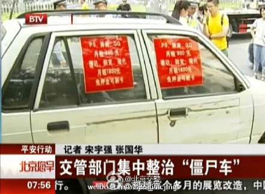
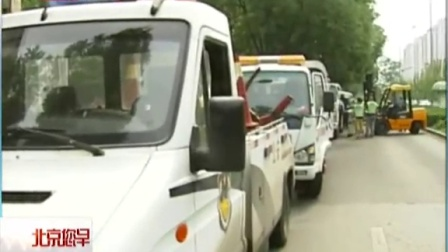

这个措施不错。见过不少僵尸车。@平安北京:#平安行动#【交管部门集中整治“僵尸车”】您是否也在路上见过这些长期在路边停放占用道路资源，车身残破且布满广告的废弃车辆呢？希望您看到它们后，拨打122报警电话进行举报，我们会在核实情况并告知车主或管理人后进行处理，我们一同让咱们的城市变得更美观吧！ @北京交警 平安行动：交管部门集中整治“僵尸车” 北京您早 150708  118次播放 02:50
 平安行动：交管部门集中整治“僵尸车” 北京您早 150708
平安行动：交管部门集中整治“僵尸车” 北京您早 150708